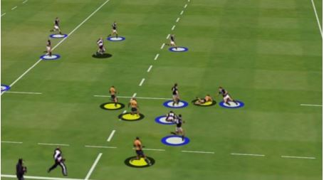
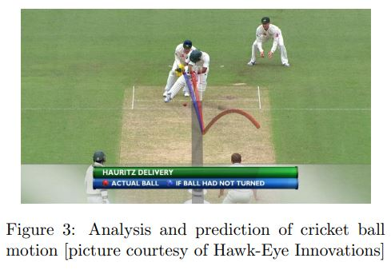

Camera calibration and tracking

[2] Player detection/tracking in rugby
The camera is incredibly important in any computer vision problem. Thus, systems must take into account the various camera angles used during a broadcast as well as the changing tilt, pan and zoom of the broadcast cameras. Another factor is the position of the camera in the reference of the sports field. Some systems even utilize sensors and gyroscopes to have the most accurate data on the movement and tilt of the broadcast camera at all times. Another issue that must be addressed is that the broadcast is not always focused on the game, there are often breaks in action where the broadcast will jump to a graphic overlay or to the commentators, which can throw off certain detection models.
Player detection and tracking
[2] Player detection and tracking in rugby
While attempting to track players, the first step in accomplishing this is to be able to determine the position of players on a field at any given moment. Some less automated systems rely on human assistance and require operators to manually click on players' feet. Others use techniques that allow the systems to differentiate between segments of the broadcast screen which are likely to have players in them at certain parts of a broadcast. Thus, analysis and data on how players move is very helpful in achieving more accurate player tracking. If it is known how players are likely to move and where they are likely to appear at certain points in a game, systems can more accurately identify the locations of players. This can often be quite difficult to achieve however because athletes often have very complicated and erratic patterns of movement that can be hard to track let alone predict. The issue of player tracking and differentiating between players is also a field of interest, however there are unique challenges that arise in this case as well. Players often appear very similar in a broadcast to each other, be it because of the camera distance from players making it hard to distinguish individuals' features or the fact that players on the same team will be wearing the same uniform. Systems can use context such as jersey numbers to combat these issues but that is far from ideal, as jersey numbers are not always in view.
Ball Tracking
[2] Ball trajectory overlay in cricket
Another main point of interest is being able to accurately track the location of the ball with low latency. Many broadcasts for sports such as baseball and tennis have instant replays of trajectories of balls that need to be accurate and provided at a moments notice. For ball tracking, systems generally rely on a large array of cameras, sometimes up to 10, with different angles and at very high frame rates to achieve the most accurate and lowest latency ball tracking. The systems also use information about the size of the ball, the appearance of the ball, as well as the motion of the ball which can be predicted through calculations. Again the calibration of the cameras in relation to the field is incredibly important in making sure that the ball tracking remains as accurate as possible.